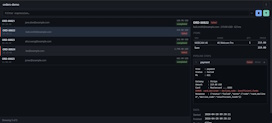
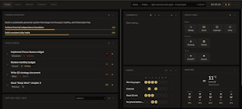

Zusammenfassung
AI‑nativer Developer kombiniert mit 25 Jahren Erfahrung in der Programmierung. Vor KI: Entwicklung von Webanwendungen — dann 2 Jahre KI-basierte App-Entwicklung sowie AI Agents. Interessiert an minimalistischen Lösungen und innovativen Technologien.
Besondere Fähigkeiten
AI Superpowers: Gesteigerte Produktivität durch KI-Einsatz. Begeistert von minimalistischen Ansätzen, welche die Produktivität kombiniert mit KI nochmals erheblich steigern. Lieblingsthemen: Informationsmanagement, Innovationen, Nutrition.
Frühere Skills — nicht mehr aktuell
bis 2015: iOS & Android Apps
bis 2010: Business-Anwendungen
Ziele
- KI-basierte Entwicklung und KI-Features
- Teilzeit 16–20 h (Home Office), temporär Vollzeit
- Work-Life-Balance durch flexible Arbeitszeiten
App‑Beispiele


Mehr Apps und Code-Samples auf meiner Webseite oder LinkedIn.